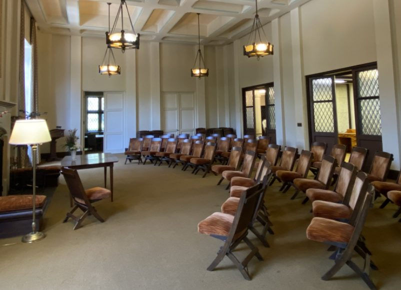

Our vision
A place for reconnecting, where the heart and soul matter as much as the intellect.
We are building a home next to campus that is rooted in the world’s spiritual and contemplative traditions, where every student, whether religious, spiritual, or secular, can find meaning, purpose, and belonging.
- Workshops
- The wisdom of the world’s sacred traditions, made practical for everyday challenges.
- Speaker events
- Contemplative teachers and leading scientists in dialogue.
- Dinner dialogues
- Students and faculty across traditions and worldviews, in honest conversation that builds empathy and understanding.
- Communities of faith
- A home where their traditions are honored, not blended.
- Silence
- Phones and laptops stay at the door, for silence, contemplative practice, and real conversation.
The Center will meet each student where they are, from a first curious visit to lasting practice and community. Campus partners, local practitioners, and student leaders will shape the offerings together.
The building
One block from campus stands a historic building that has been used for spiritual study and prayer since the 1930s. It has a grand hall, meeting rooms, and space for a library of sacred texts from every tradition.
Its owners, the trustees of the Christian Science Organization, are willing to donate the building so that its contemplative legacy can be rekindled for a new, inclusive purpose.


What a week could look like
One example of how a schedule could be crafted. These are ideas, not scheduled events.
Monday
- 9–10 AM Morning meditation and open discussion
- 3–4 PM Workshop: bridging spirituality and the sciences
- 7–8 PM Multifaith dinner and dialogue
Tuesday
- 2–4 PM Drop-in support with university psychologists
- 4–6 PM Worldwide sacred text study
- 7–8 PM Speaker: Krista Tippett on humanity and sacredness in a time of AI
Wednesday
- 9–10 AM “The practice of compassion” with East Bay Meditation Center
- 3–4 PM Workshop: focus in a time of distractions
- 7–8 PM Contemplative practice book club
Thursday
- 7–8 PM Speaker: Prof. Dacher Keltner on the power of awe
- 9–10 PM Library open mic on mental health, featuring student poets
Friday
- 1–2 PM Salat al-Jumu’ah (Friday prayer)
- 4–6 PM Workshop: bridging political and cultural divides
- 6–8 PM Shabbat dinner and prayer
Saturday
- 9 AM–12 PM Weekly morning retreat led by Spirit Rock Meditation Center
Help keep the building
The building is open for programming now thanks to its owners, and students are already gathering there. To keep it, we need to raise:
$1 million by February 2027
$3 million by June 2027
The funds will restore the historic building and start an endowment for the Center’s long-term future. The owners will hold the building for us until June 2027.
Advisors
- Dacher Keltner UC Berkeley psychology, founder of Greater Good Science Center
- Aneel Chima founder of Stanford Flourishing Project
- Alexander Kern director of Northeastern’s Center for Spirituality, Dialogue, and Service
- Kelly Dunlop Religious, Secular, Spiritual and Interfaith Engagement Lead, University of Michigan
- Rosanne Siino former founding member and vice president of communications for Netscape
- Michael Dart executive director of Spirit Rock Meditation Center
- David Presti UC Berkeley neuroscience
- Todd Green senior director of campus partnerships, Interfaith America
- James Baraz meditation teacher and co-founder of Spirit Rock Meditation Center
- Michael Nagler former UC Berkeley professor, founder of the Metta Center for Nonviolence
- Rabbi Maya Zinkow Cal Interfaith Council